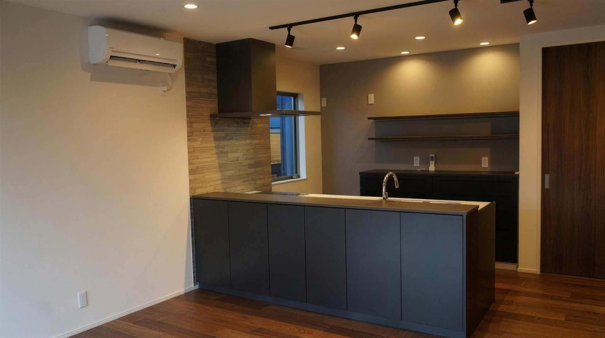
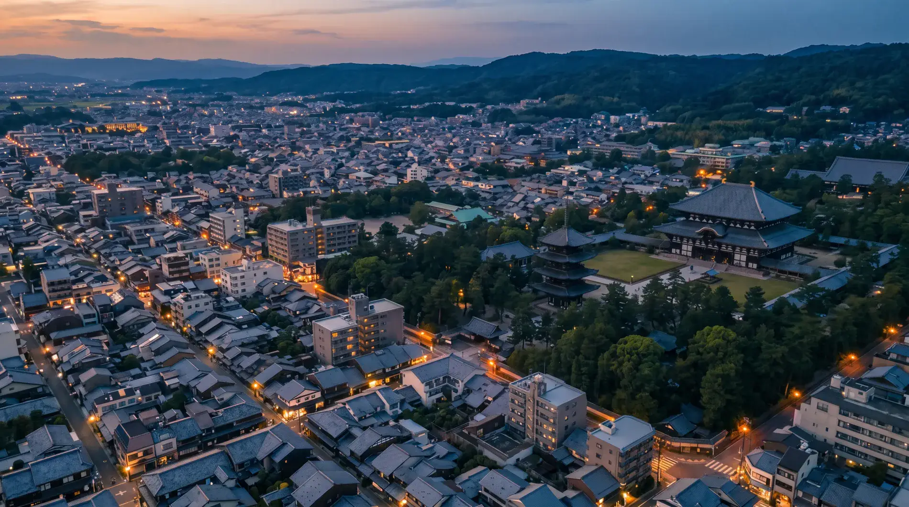
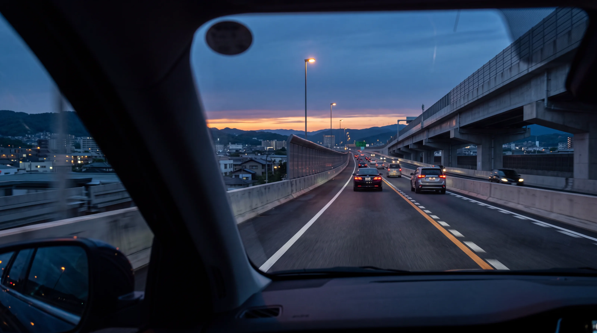

やまとの家
花鳥風月
The House of Yamato
 株式会社
やまと不動産
株式会社
やまと不動産
やまとの家
花鳥風月
The House of Yamato
やまとの家
ずっと、愛せる家。
「花鳥風月」自然の美しさを愛でる心のように、
住む人のこだわりを形にする「注文住宅」
標準装備

Kitchen
Standardクリナップ ステディア標準
標準装備

Bath
StandardTOTO サザナ標準
標準装備

Vanity
StandardTOTO オクターブ Lite標準
標準装備

Living
Standard天井高2.4m・ハイドア2.3m標準
標準装備

Wall
Standard旭化成 ヘーベルパワーボード標準
標準装備

Tatami
StandardDAIKEN 和紙畳 ここち和座標準
標準装備

Entrance
StandardLIXIL ジエスタ2標準
費用のこと
標準装備のグレードが高いので、
あとから設備を足す必要がありません。
一般的にはかかる費用が、
やまとでは0円です。
土地測量費・土地造成費・水道工事変更費も0円です。
2,000万円規模の土地の場合、通常400万円〜470万円かかる費用が全て0円です。
こだわり

浮いた費用は、オプションに回すこともできます。
Atrium
Option吹き抜け・天井を上げる自由設計
こだわり

Counter
Option造作カウンター・折り下げ天井の間接照明自由設計
こだわり

Storage
Option玄関の造作収納・足元の間接照明自由設計

ご案内
花鳥風月 ── やまとの家
大手で諦めた家を、
当社と一緒に叶えましょう。
自由設計と、高水準な標準装備。
01 / 13
新着情報

Our Craft 家づくりのこだわり →
Properties 物件一覧 → Payment Simulation
お支払い
Payment Simulation
お支払いやまと不動産が、ずっと大切にしていることがあります。それは、家を見たときに、少し驚いてもらえること。
いいと思うものは、できるだけ最初から。私たちは、それを「標準」にしています。
建てたときだけではなく、暮らしてから、もっと好きになる家を。
株式会社やまと不動産
私たちのことは、会社案内でもご覧いただけます →やまと不動産では三つの住まいをご用意しました。
三つのラインナップで変わるのは、広さと、設備・性能へのこだわり方。
構造・断熱・外壁・屋根など、家の基本性能はすべて共通です。
暮らし方や予算に合わせて選べる、やまと不動産の三つの住まいです。
 花Hana
花Hana天井を高くとり、設備を整えた家
玄関ドアは顔認証で開きます。軒天にはニチハの木目12mmを使い、窓はワイドサッシです。
2,680万円コミコミ価格・税込
 京Miyako
京Miyako限られた敷地のために設計した家
奈良のように広く土地を使えない場所でも建てられるよう、28坪3LDKにまとめています。
2,480万円コミコミ価格・税込
 風Kaze
風Kaze長く住むための性能を備えた家
3帖のベランダと電動シャッターが標準です。防犯ガラスは掃き出し窓2か所と腰窓2か所に入ります。
2,680万円コミコミ価格・税込

三つのプランで決まっているのは、家の広さと、標準で入る設備だけ。
間取りは、まだ何も決まっていません。
家族の人数も、暮らし方も、好きな時間の過ごし方も、それぞれ違うから。
最初の打ち合わせから設計士が入り、「どんな家に住みたいか」を一緒に考えるところから始めます。
そして、間取りがきちんと決まってから、はじめて建物のご契約へ進みます。
ここまでにかける時間は、およそ3か月。
急いで決めるのではなく、納得できるまで話して、考えて、自分たちの暮らしに合う家をつくっていく。
やまと不動産の家づくりは、そこから始まります。


やまと不動産が実際に建てた家の間取りです。
※ 価格・面積・間取りは確定値（2026年改定・コミコミ価格・税込）です。

車窓・駅周辺の背景は、鉄道移動を表現した生成コンセプトです。
電車の旅程を飛ばして、移動情報を見る平日18時27分に大阪難波駅を出発する快速急行は、鶴橋、生駒、大和西大寺を経て、19時08分に近鉄奈良駅へ到着します。所要時間は41分です。
Weekday & Weekend Access
大阪難波から近鉄奈良までは、平日の快速急行で41分。休日は中町ICから第二阪奈道路を利用して大阪方面へ移動できます。
平日の通勤 ／ 電車Direct ／ 乗換なし
近鉄公式ダイヤ（2026年3月14日変更）で確認した平日の一例です。列車種別・運行状況により変わります。近鉄公式で確認
休日の移動 ／ 車Via Daini-Hanna

第二阪奈道路・阪神高速を利用する目安です。一般道の所要時間と渋滞時間は含みません。
標準所要時間（約27分）を30分に丸めた目安です。道路画像は移動場面を表現した生成コンセプトです。
奈良と京都南部、この広がりの中から、ご希望に合う一区画がきっと見つかります。
自社分譲物件一覧を見るはじめての方がイメージしやすいように、10の段階にまとめました。それぞれの段階で何をするかは、担当者が毎回ご説明します。
Drag / Scroll →
よくあるご質問
お見積もりは税込のコミコミ価格です。地盤改良費・つなぎ融資・仲介手数料・土地測量費・土地造成費・水道工事変更費は、いずれも0円です。2,000万円規模の土地なら、通常400万円〜470万円かかる費用がかかりません。正直にお伝えすると、カーテンレールと居室の照明は標準に含まれないため、事前のご用意をお願いしています。
できます。奈良県・京都府全域に自社分譲地を150区画以上を保有しています。土地探しからのご相談も、土地が決まっている方のご相談も承ります。
建てられます。京都府南部（木津川市・京田辺市など）にも自社分譲地があり、宇治の京都支店でもご相談いただけます。
かかりません。モデルハウス「やまとランド」の見学は無料です。予約制のため、ご来場前にご予約をお願いします。
無理におすすめすることはありません。その土地やプランがお客様に本当に合っているか、メリットもデメリットも正直にお話しします。合っていなければ、別の案をご提案します。
設計・建築・造成・開発・販売を、すべて自社で手がけているからです。間に入る会社がないので、中間マージンが乗りません。展示場専用の建物も持たず、分譲地に建てた家をそのままモデルハウスにしています。素材は旭化成・住友ゴム・クリナップ・TOTOなど、大手と同じものを使っています。
創業から奈良で、土地の仕入れと宅地造成を自社で続けてきたからです。現在は奈良県・京都府全域で150区画以上を保有し、216区画を展開しています。仕入れから造成、設計、施工、販売までを一社で行っています。
あります。自社所有の土地なら仲介手数料がかかりません。土地と建物をセットでご提供するため、建物完成後の一括支払いとなり、建築中の住宅ローンや金利のご負担も発生しません。土地の造成状況や地盤の履歴を当社が把握しているため、地盤改良が必要になった場合も当社が費用を負担します。
あります。定期点検は1年目・5年目・10年目・20年目に無料でうかがいます。初期保証は10年間で、10年ごとの延長により最長30年まで継続できます。地盤保証は20年、しろあり保証は10年です。蛇口の水漏れや網戸の張替えなど、日常の小さなお困りごともお電話でご相談いただけます。
このほかのご質問は、お問い合わせフォームからお気軽にどうぞ。
モデルハウス「やまとランド」の見学は、無料・予約制です。ご見学の場で、契約を迫ることはありません。資料だけ、LINEだけのご相談も歓迎です。